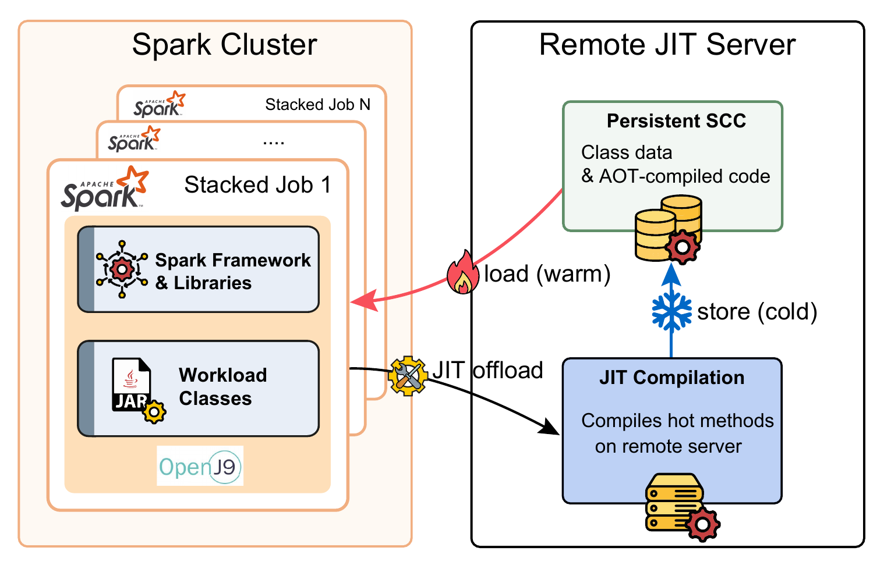

CASCON 2026, Technical Papers
Start fast, or run fast?
TPC-H Q6 at SF60 on HotSpot, median of 5 runs (Table V).
SF = TPC-H scale factor, about 1 GB of data per unit.
SF60 ≈ 60 GB.
This talk in one question: should a fresh JVM in a distributed data engine reuse its warmup, or just run faster?
Section I
Some data is too big for one computer. Spark splits one question across many.
Same Java code, same Spark.
Only the JVM is swapped.
Each driver and executor is a JVM. With HotSpot, every fresh JVM redoes its warmup.
OpenJ9 stores its start-up work in a Shared Class Cache. The next job’s JVMs load it instead.
Section II

Store (cold). The first run fills the cache with class data and AOT-compiled code.
Load (warm). Later jobs load it instead of warming up again.
JIT offload. Remaining compilation runs on a remote JIT server.
Fig. 1. Spark jobs on OpenJ9: warmup-state reuse with a persistent SCC and compilation offload with JITServer.
A standard SQL benchmark in the database community.
Fresh JVMs per job, Spark 4.1, JDK 21: when does reusing warmup beat running faster?
Δ = C − S
S, time the cache saves outside the query: roughly fixed across queries.
It depends on the deployment, not the query.
C, extra time OpenJ9 needs inside the query: grows with work.
RQ1 Who wins on fresh JVMs?
RQ2 When does it flip?
RQ3 Why does it flip?
Model (Eq. 3). Dots measured at SF60, 5 paired runs.
The dashed line through them is illustrative, not fitted.
Comparing OpenJ9 with and without its cache isolates the cache.
| Setup | Configuration | Role |
|---|---|---|
| g1 | HotSpot, G1 collector | Baseline, stock (no AppCDS) |
| scc | OpenJ9, gencon, warm SCC | Warmup reuse under test |
| bare | OpenJ9, gencon, SCC off | Control: same JVM, no cache |
| class | OpenJ9, gencon, warm SCC, cached AOT code blocked | Class-only diagnostic |
AOT code = machine code compiled ahead of time in an earlier run and kept in the cache, so later JVMs can skip compiling it.
TPC-H, 22 queries from SF10 to SF90, and UDFBench.
Three AMD EPYC-Rome servers, Spark 4.1.2 on JDK 21.
Fresh executors per job, median of five runs.
Section III
SF10: all 22 faster, 15.9% on average.
Median 37 s → 29 s.
SF20: about 16% faster on average.
SF30: 10.4% faster on average, and the heaviest joins, Q17 and Q18, start to run faster on HotSpot.
The win is the cache. Cache off, OpenJ9 is slower on every query by 8–30 s.
Q18 at SF10, OpenJ9 only:
This is small scale, SF10 to SF30. From SF40 up, heavy queries start to lose. That is RQ2.
Light queries stay below the line at every size. The heavier the query, the sooner it flips.
Line: Δ = C − S (s)
● OpenJ9 + SCC faster
● HotSpot faster
○ HotSpot ahead by under 5 s, not yet a clear flip
At SF60 both queries save 7.8 s before the query runs. The query’s own work decides who wins.
Where the 7.8 s comes from: JVM launch, Spark start-up and table setup. Query planning is unchanged.
What is reused: about 14,000 classes and 23–25k compiled methods, alike for both queries.
What is not: Q18 still JIT-compiles 26k methods fresh, 2.5× Q6.
S = cache saving, C = extra query time.
TPC-H at SF60, five paired runs (Tables V and VI).
Light UDFs keep the cache’s win. Compute-heavy ones flip to HotSpot as data grows.
| Query | UDF | small | medium | large |
|---|---|---|---|---|
| q1 | scalar (date) | −6 | −7 | −7 |
| q7 | scalar (date) | −6 | −6 | −8 |
| q19 | aggregate / pivot | −5 | −6 | −9 |
| q13 | table function | −5 | −5 | −6 |
| q15 | table function | −7 | −6 | −3 |
| q16 | table function | −7 | −4 | −5 |
| q9 | combinations | −3 | +4 | +6 |
| q18 | NLP stemming | −5 | +2 | +10 |
Six light UDFs stay faster on OpenJ9 at every scale, by 3–9 s.
q9 and q18 flip to HotSpot at medium scale.
The gap widens at large.
The break-even follows computational weight, not SQL operators.
UDFBench (Table VII).
Cells: Δ in seconds, OpenJ9 + SCC − HotSpot.
Negative means OpenJ9 + SCC is faster.
Section IV
N · S > Cpop + Cvol
Section V
So choose the JVM by how much work a query does, not by data size alone.
Backup
| Scale | Non-query | Query | Total | |||
|---|---|---|---|---|---|---|
| HotSpot | OpenJ9 | HotSpot | OpenJ9 | HotSpot | OpenJ9 | |
| SF10 | 28.4 | 20.8 | 39.6 | 45.2 | 68.0 | 66.0 |
| SF20 | 26.5 | 20.5 | 67.5 | 74.0 | 94.0 | 94.5 |
| SF30 | 25.1 | 21.0 | 90.9 | 102.0 | 116.0 | 123.0 |
| SF40 | 24.0 | 17.5 | 75.0 | 79.5 | 99.0 | 97.0 |
| SF50 | 24.3 | 19.6 | 90.7 | 94.4 | 115.0 | 114.0 |
| SF60 | 25.5 | 18.7 | 106.5 | 118.3 | 132.0 | 137.0 |
| SF70 | 25.1 | 19.2 | 121.9 | 137.8 | 147.0 | 157.0 |
| SF80 | 25.0 | 19.9 | 136.0 | 150.1 | 161.0 | 170.0 |
| SF90 | 24.9 | 18.9 | 147.1 | 164.1 | 172.0 | 183.0 |
Median seconds (Table III).
OpenJ9 = OpenJ9 + warm SCC.
SF10–30 and SF40–90 are separate campaigns.
Backup
Five runs per point after a discarded cache-population run.
Median reported.
Overlapping SF60 values differ by at most 6.8% across campaigns.
A crossover counts only if it persists and exceeds about 5 s.
N · S > Cpop + Cvol
With S ≈ 7.8 s, a 60–180 s population run pays off after roughly 10–20 jobs.
OpenJ9 with the cache off and a remote JITServer: 121 s vs HotSpot 77 s.
Adding JITServer to a warm-cache run cost +15 s (+29%) in an earlier measurement.
It is on in every OpenJ9 setup.
Backup
Partly. HotSpot’s AppCDS shares class data, but not compiled code or JIT profiles.
| Reused across JVM launches | HotSpot AppCDS (JDK 21) | OpenJ9 SCC |
|---|---|---|
| Parsed, verified class data | yes | yes |
| Classes from Spark’s own class loaders | limited | yes |
| Compiled method code (AOT) | no | yes |
| JIT profiling data | no | yes |
| Validation | whole class path at once | per class, as it loads |
Table VIII. On stock Spark, AppCDS fails validation (the launcher lists slf4j-api twice), so our baseline is stock HotSpot.
With AppCDS working, OpenJ9’s margin would shrink toward the 1–3 s that AOT code adds.
Backup
S holds in a 4–8 s band. C rises from 4.5 to 17.0 s, so from SF60 on HotSpot stays faster.
TPC-H Q18, SF40–90, median of 5 runs (Table III).
Backup
Each study removes one source of overhead. None asks which JVM to run when job lengths vary.
| Work | What it addresses | What it leaves open |
|---|---|---|
| HotTub | Reuses already-warm JVMs across jobs | Leaves the fresh-JVM setting. No JVM comparison |
| Flare | Enclave and memory overhead in secure analytics | Not JVM warmup |
| Xu et al. | Workload-dependent garbage collection | Not reuse across launches |
Our question: with fresh JVMs per job on Spark 4.1 and JDK 21, when does reusing warmup beat running faster?
Backup
Almost all of the 7.8 s is saved before the query runs, in framework startup.
Dark: Q6.
Light: Q18.
Time saved by OpenJ9 + SCC at SF60, seconds (Table V).
JVM launch, Spark start-up and table setup all get faster with the cache.
Query planning is unchanged: the saving does not touch the query itself.
The same 7.8 s for a 3.6 s scan and a 107 s join.
Backup
Both queries reuse about the same framework state. The work left over is what differs.
Reuse is framework code: JDK, Spark, Scala, Hadoop, Parquet. It is nearly the same for both queries.
Q18 still compiles 2.5× more methods fresh: work the cache cannot cover.
Code generated for the query itself is tiny: 14 vs 176 compilations.
Dark: Q6.
Light: Q18.
OpenJ9 + SCC runtime events at SF60 (Table VI).
Classes counted on the driver, other rows over all JVMs.
Backup
lineitem6M × SF
one line of an order: the biggest table
l_orderkey, partkey, suppkey, linenumber, quantity, extendedprice, discount, tax, returnflag, linestatus, shipdate, commitdate, receiptdate, shipinstruct, shipmode
orders1.5M × SF
one customer order
o_orderkey, custkey, orderstatus, totalprice, orderdate, orderpriority, clerk, shippriority
customer150K × SF
who buys
c_custkey, name, address, nationkey, phone, acctbal, mktsegment
part200K × SF
what is sold
p_partkey, name, mfgr, brand, type, size, container, retailprice
partsupp800K × SF
which supplier sells which part
ps_partkey, suppkey, availqty, supplycost
supplier10K × SF
who sells
s_suppkey, name, address, nationkey, phone, acctbal
nation25
country
n_nationkey, name, regionkey
region5
continent
r_regionkey, name
A sales database: customers place orders, each order has line items, each line item is a part from a supplier.
Rows grow with SF.
Every column name starts with the table prefix, for example l_shipdate.
Comment columns are omitted.
Backup
Q1 light · scan + aggregate
SELECT l_returnflag, l_linestatus,
sum(l_quantity) AS sum_qty,
sum(l_extendedprice) AS sum_base_price,
sum(l_extendedprice * (1 - l_discount)) AS sum_disc_price,
sum(l_extendedprice * (1 - l_discount) * (1 + l_tax)) AS sum_charge,
avg(l_quantity) AS avg_qty,
avg(l_extendedprice) AS avg_price,
avg(l_discount) AS avg_disc,
count(*) AS count_order
FROM lineitem
WHERE l_shipdate <= date '1998-12-01' - interval '90' day
GROUP BY l_returnflag, l_linestatus
ORDER BY l_returnflag, l_linestatus;Q6 light · single scan
SELECT sum(l_extendedprice * l_discount) AS revenue FROM lineitem WHERE l_shipdate >= date '1994-01-01' AND l_shipdate < date '1994-01-01' + interval '1' year AND l_discount BETWEEN 0.06 - 0.01 AND 0.06 + 0.01 AND l_quantity < 24;
Standard TPC-H text with the default validation parameters.
Backup
Q9 medium · six-table join
SELECT nation, o_year, sum(amount) AS sum_profit
FROM (
SELECT n_name AS nation,
extract(year FROM o_orderdate) AS o_year,
l_extendedprice * (1 - l_discount)
- ps_supplycost * l_quantity AS amount
FROM part, supplier, lineitem, partsupp, orders, nation
WHERE s_suppkey = l_suppkey
AND ps_suppkey = l_suppkey
AND ps_partkey = l_partkey
AND p_partkey = l_partkey
AND o_orderkey = l_orderkey
AND s_nationkey = n_nationkey
AND p_name LIKE '%green%'
) AS profit
GROUP BY nation, o_year
ORDER BY nation, o_year DESC;Q17 heavy · correlated subquery
SELECT sum(l_extendedprice) / 7.0 AS avg_yearly
FROM lineitem, part
WHERE p_partkey = l_partkey
AND p_brand = 'Brand#23'
AND p_container = 'MED BOX'
AND l_quantity < (
SELECT 0.2 * avg(l_quantity)
FROM lineitem
WHERE l_partkey = p_partkey);Standard TPC-H text with the default validation parameters.
Backup
Q18 heavy · join + large aggregate
SELECT c_name, c_custkey, o_orderkey,
o_orderdate, o_totalprice, sum(l_quantity)
FROM customer, orders, lineitem
WHERE o_orderkey IN (
SELECT l_orderkey
FROM lineitem
GROUP BY l_orderkey
HAVING sum(l_quantity) > 300)
AND c_custkey = o_custkey
AND o_orderkey = l_orderkey
GROUP BY c_name, c_custkey, o_orderkey,
o_orderdate, o_totalprice
ORDER BY o_totalprice DESC, o_orderdate
LIMIT 100;Q21 heavy · self-joins + EXISTS
SELECT s_name, count(*) AS numwait
FROM supplier, lineitem l1, orders, nation
WHERE s_suppkey = l1.l_suppkey
AND o_orderkey = l1.l_orderkey
AND o_orderstatus = 'F'
AND l1.l_receiptdate > l1.l_commitdate
AND EXISTS (
SELECT * FROM lineitem l2
WHERE l2.l_orderkey = l1.l_orderkey
AND l2.l_suppkey <> l1.l_suppkey)
AND NOT EXISTS (
SELECT * FROM lineitem l3
WHERE l3.l_orderkey = l1.l_orderkey
AND l3.l_suppkey <> l1.l_suppkey
AND l3.l_receiptdate > l3.l_commitdate)
AND s_nationkey = n_nationkey
AND n_name = 'SAUDI ARABIA'
GROUP BY s_name
ORDER BY numwait DESC, s_name
LIMIT 100;Standard TPC-H text with the default validation parameters.